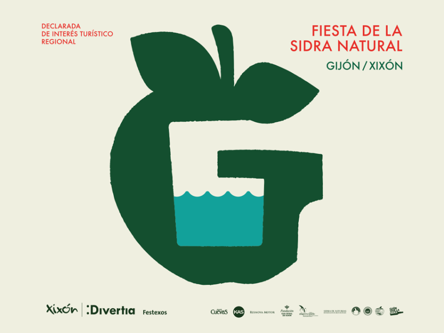
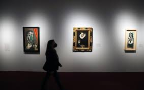
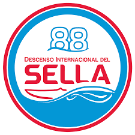
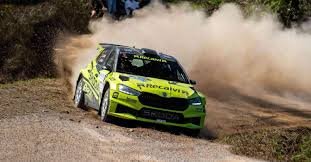
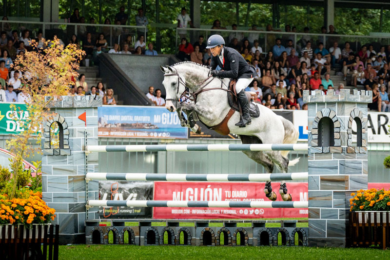
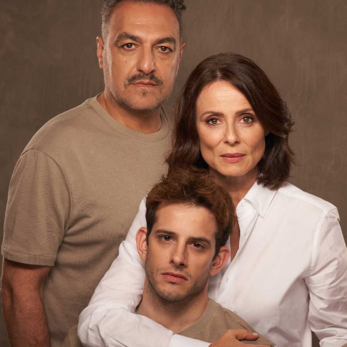

Festival de la Sidra Natural
Plaza Mayor y Playa de Poniente, Gijón
1, enero, 2026


Plaza Mayor y Playa de Poniente, Gijón
1, enero, 2026

Museo de Bellas Artes de Asturias, Oviedo
12, enero, 2026

Arriondas - Ribadesella
24, enero, 2026

Oviedo y tramos de la zona central
12, febrero, 2026

Hipódromo de Las Mestas, Gijón
9, febrero, 2026

Teatro Palacio Valdés, Avilés
6, febrero, 2026